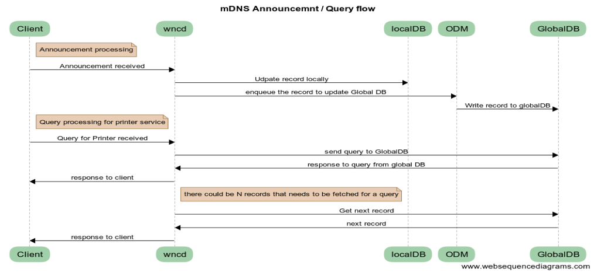

Over the last decade, wireless devices penetration has increased drastically. Other than mobile phones and laptops we have seen massive increase in wireless adoption rate in utility devices such as printers, home assistants, cleaning bots, TV/monitors, IPads etc. Such ever growing scale demands an elastic IT infrastructure which can scale with the demand. To meet such a need, Cisco is bringing whole new scalable wireless LAN controller(next gen) called eWLC (elastic Wireless LAN Controller).
Each device offers some special service or need other service interactions to fulfill a task. For example, to print we need printer service and to use printer service we need printer IP. Previously printers used to be connected to ethernet port and IP's were statically assigned and everyone had to hardcode printer IPs to use printer services. With printers going wireless and dynamic IP allocation it is really a frustrating experience to change printer IP settings before every print. Today we are surrounded but 100's of such services which makes this task nearly impossible. To solve this problem, we can use mDNS protocol
(More info)
multicast DNS (mDNS) is a service discovery protocol. Given its multicast nature, it is noisy. Specially in wireless, it’s so noisy that it might crash your access point (AP) if AP starts accepting and flooding mDNS traffic (Google cromecast crashing routers) Also multicast traffic chokes wireless channel. Hence by default multicast traffic is dropped (not flooded), which limits service discovery. We developed a Service Discovery Gateway which caches all the services in network (40k clients) and upon mDNS query it gives unicast response to the client to avoid channel congestion.
Core of this solution in scalability/elasticity. mDNS runs as a library in every WNCD process. As load increases, more instances of WNCD can be spurn, it brings complexity of distributed cache. But queries need to be served from global pool which brings database lock contention and data consistency challenges.
Advertisment and query work flow
Features:
This solution is replacment of mDNS on AirOS controller with high scalability and advance features. Checkout official documentation